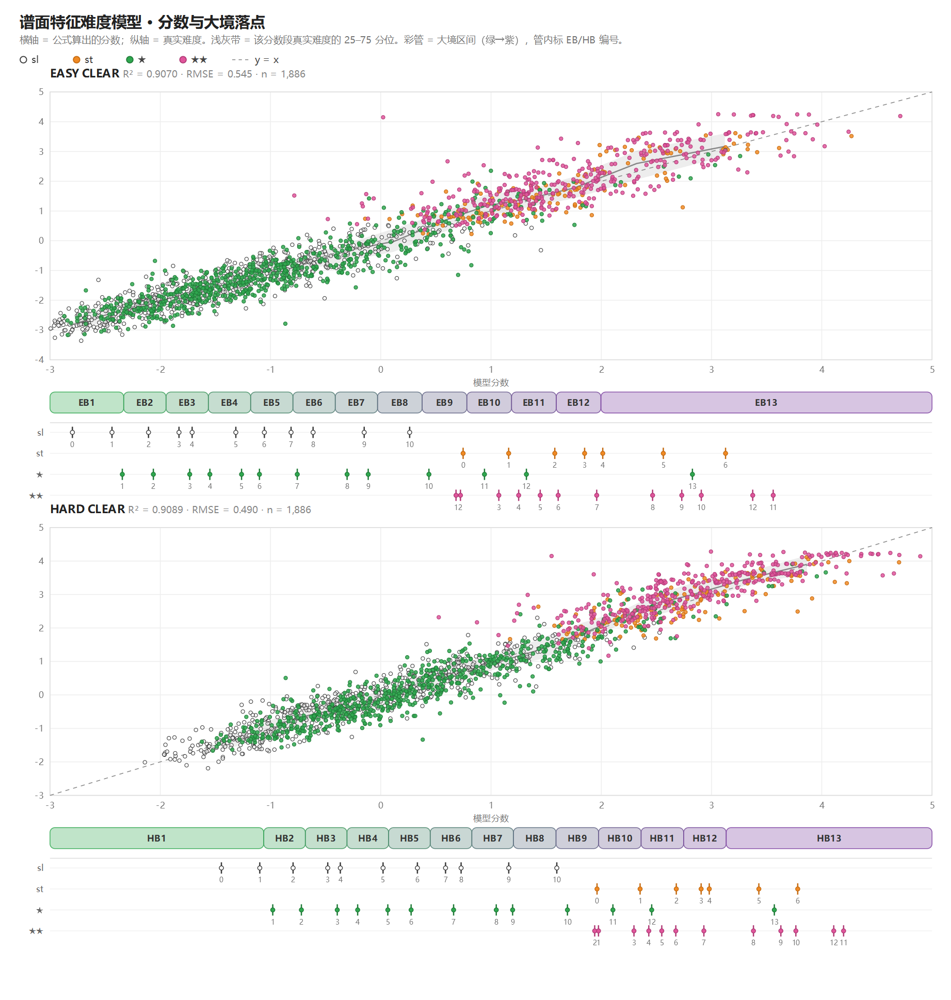

DP DAOJI · FAQ
よくある質問
DP 修仙界へようこそ。世間の修行者が座禅で気を巡らせる一方、我々は両手で同時に修行する——すなわち 14 鍵を同時に叩く。境界が高いほど、譜面は難しい。
難易度の計算方法
手に入れた譜面は、すべてモデルで直接計算しています。難易度モデルはまだ初期段階で、隣り合う境界は今も重なっています。異なる境界の絶対比較には向かず、「だいたいどの難易度帯か」を見るのが適切です。不自然に感じる譜面があれば、どれかを教えていただけるとモデルの改善が早まります。
横軸はモデルが算出したスコア、縦軸は実際の難易度です。色付きの帯は大境界の区間、その下の 4 段の目盛りは各出典表の等級（sl / st / ★ / ★★）がどこに位置するかを示します。上は EASY、下は HARD。
